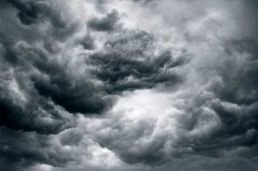

ISTOCKPHOTO
Small islands are already losing reclaimed land to "unusual high waves," sounding the alarm for the potential dangers of the rising sea levels and increasingly powerful storms caused by global warming.